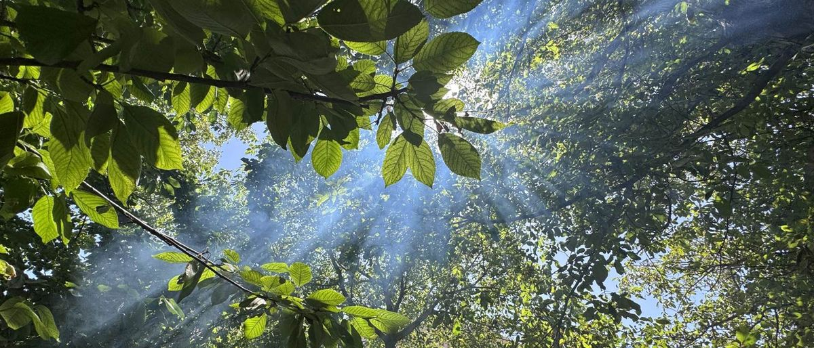

制作側の案
このページは、BORDERさまに向けた制作側の試作です。
店名の文字から連想して、縞と罫線のデザインにしてみました。
店名の意味や店主さまの想いは存じておりません。確認のうえ、差し替えます。
「線を引いて、余白を読む」は制作側のコンセプト案です。店舗が語った言葉ではありません。
店舗情報
| 店名 | BORDER |
|---|---|
| 業種 | カフェ |
| 住所 | 鳥取県境港市浜ノ町141-1 |
| 電話 | 0859-21-5028 |
| @border_sakaiminato | |
| 営業時間 | 準備中(お問い合わせください) |
| 定休日 | 準備中(お問い合わせください) |
| 席数・駐車場 | 準備中(お問い合わせください) |
